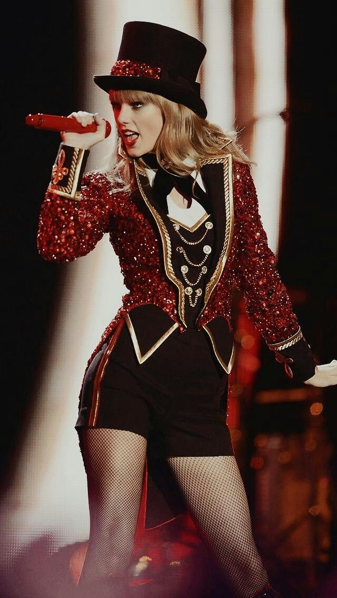

Release Date: October 22, 2012
Singles: We Are Never Ever Getting Back Together, Begin Again, I Knew You Were Trouble, 22, Red, Everything Has Changed, The Last Time
Genre: Country
Taylor Swift released her 4th studio album, Red, in 2012. The album's title refers to the tumultuous, "red" emotions Swift experienced during the album's conception; its songs discuss the complex and conflicting feelings resulting from fading romance. This album was Swift's most experimental album so far combining styles of pop, country, rock, and dubstep. This experiemntation of production had people very split about their opinions of this album when it first came out. However, it still saw great success. In the US, Red spent seven weeks atop the Billboard 200. Red also has what both fans and critics consider to be her best song of all time "All Too Well."

At this point in her career, Taylor Swift the only controversy Taylor Swift was facing was people debating whether they wanted her to transition into pop music or stay country. Although Swift wanted to experiment with various musical styles, she prioritized the lyrics over the production and strove to capture her emotions. As always, no matter genre she leaned into, the storytelling would always shine through her music. At this point, all of the petty controversy that surrounded her Speak Now era had passed and Swift was once again topping charts and selling out tours.